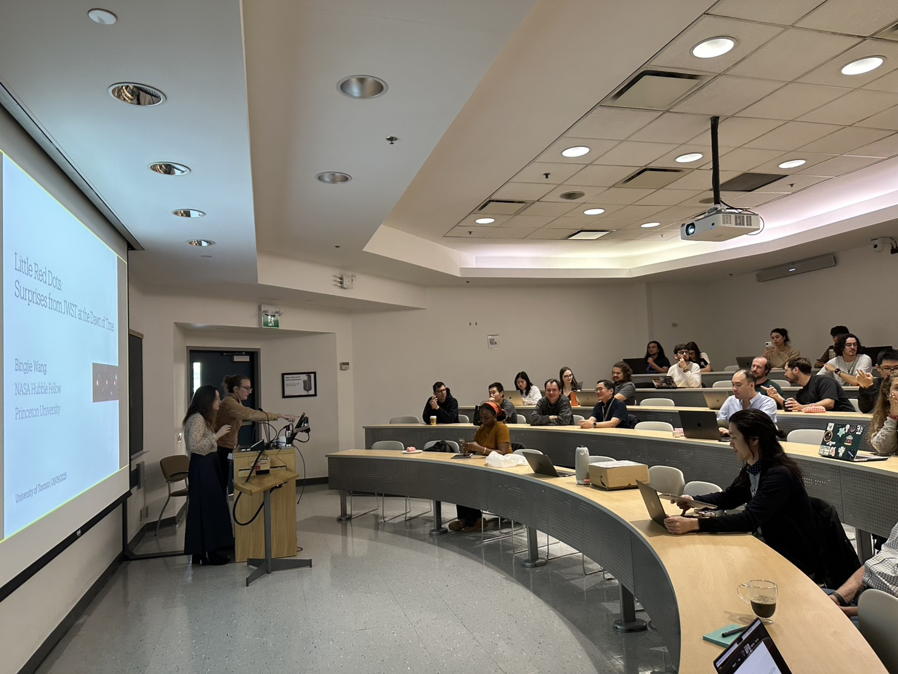
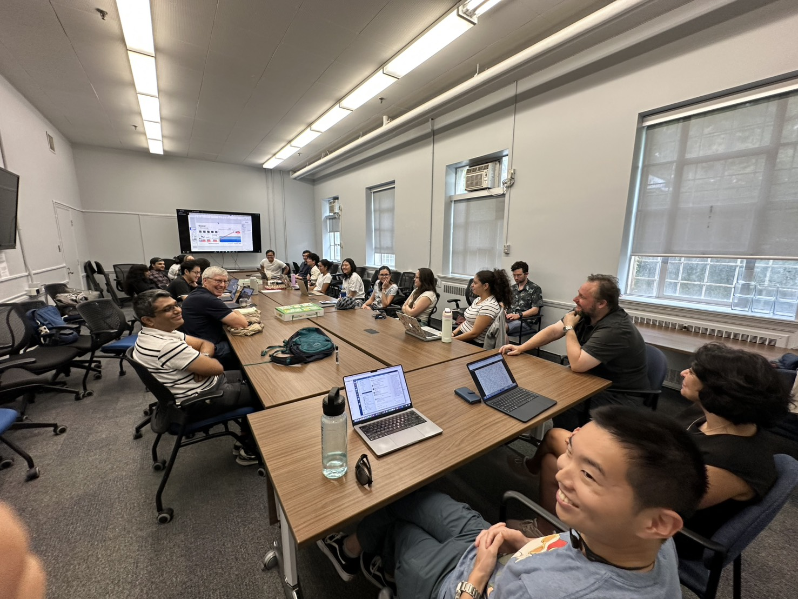
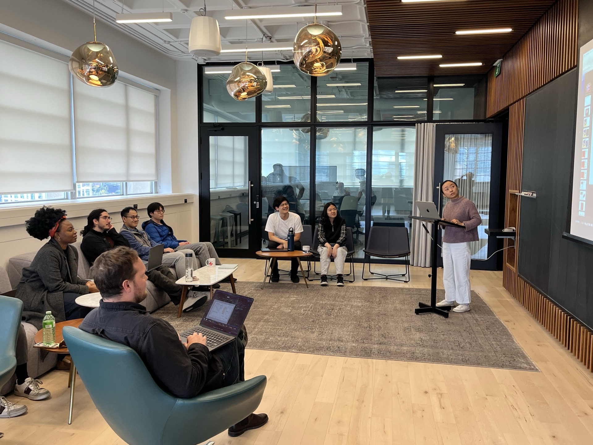
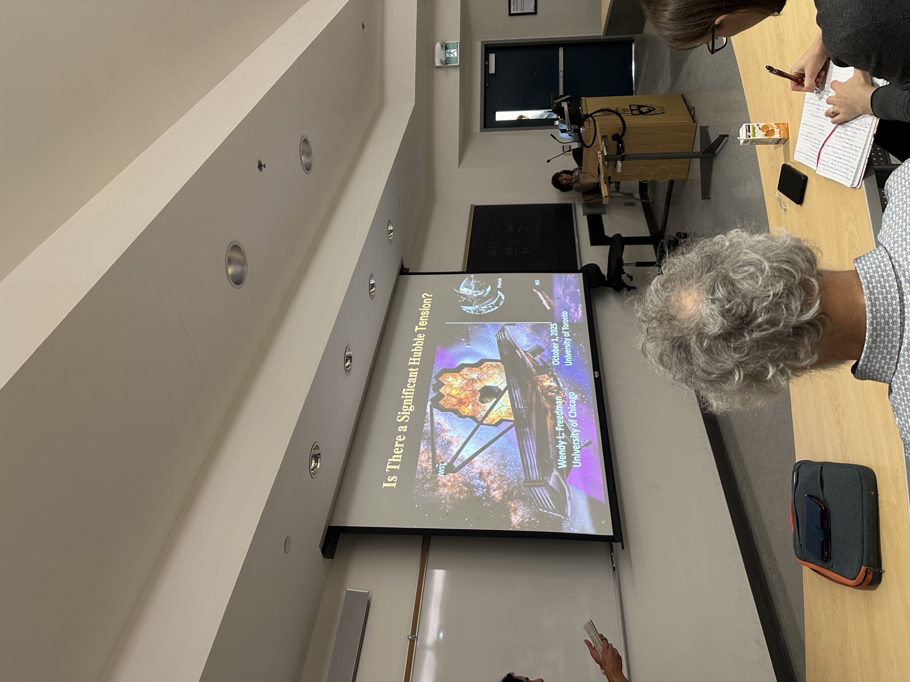

Talks, papers, program approvals, and weekly seminars around the group.
Regular seminars and meetings in the department and the group.
| Day | Schedule |
|---|---|
| Monday | 15:00–16:00 CITA Seminar @ MP1318A |
| Tuesday | 13:10–14:00 TASTY talk @ Cody Hall (seminar for internal members & visitors) |
| Wednesday | 11:30–13:00 SMILE (astroStatistics and MachIne LEarning) Seminar 14:00–15:00 Astro Colloquium @ Cody Hall |
| Thursday | 11:00–12:30 High-z Joint Group Meeting @ AB88 13:00–14:00 Office hours @ AB226 |
| Friday | 12:30–13:00 Group Meeting @ AB113 |

TASTY talk by Dr. Bingjie Wang (Princeton), Fall 2025

High-z Joint Group Meeting on Thursdays

Visitor talk by Mandy Chen (Carnegie), Fall 2025

Colloquium by Prof. Wendy Freedman (Chicago), Fall 2025